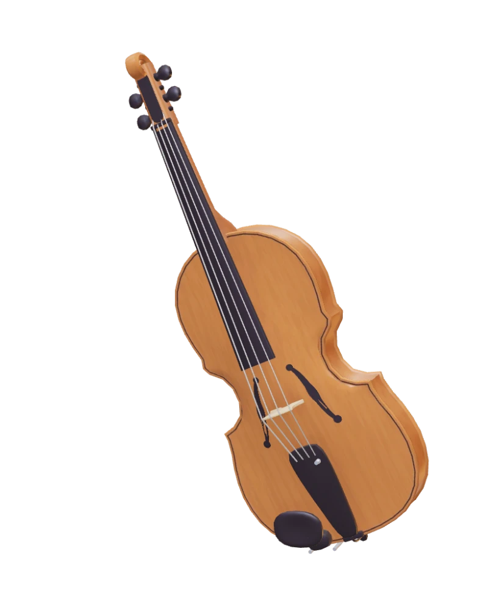
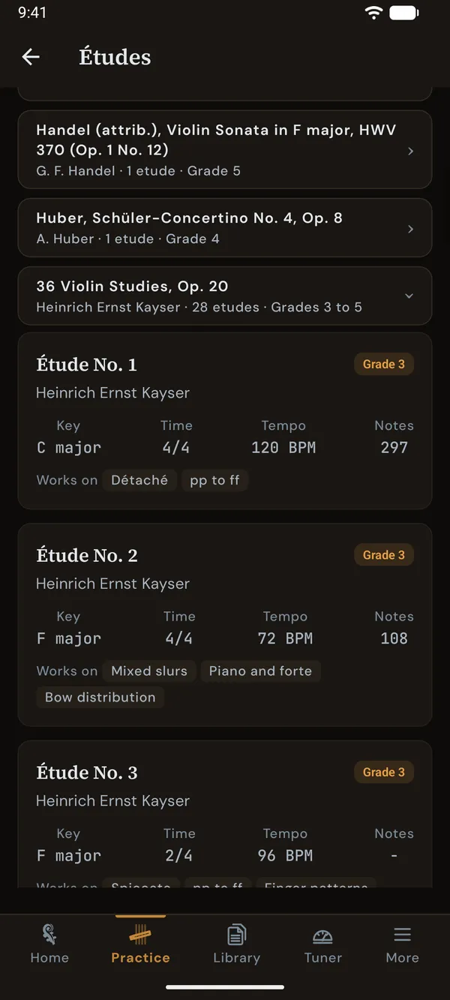
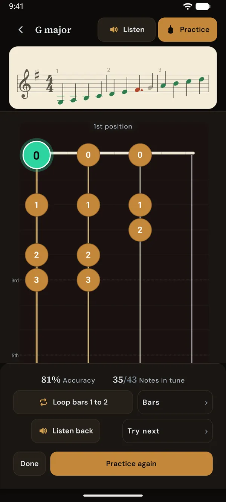
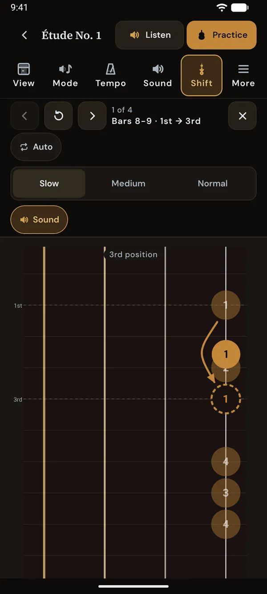
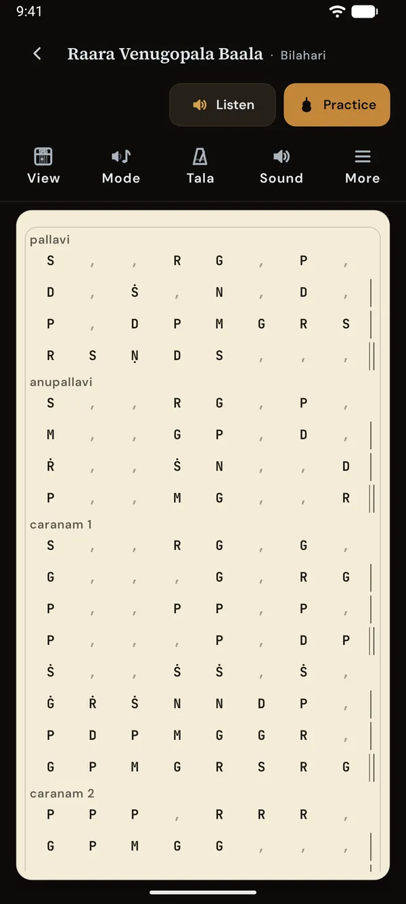
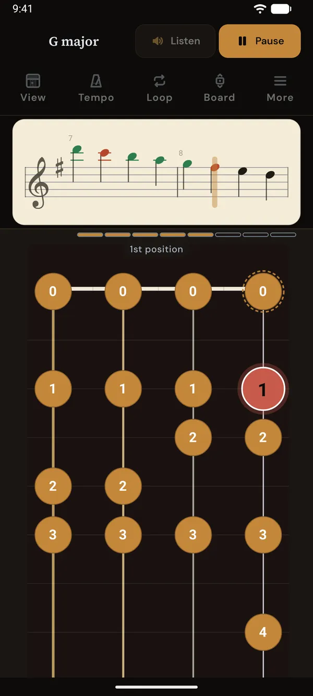
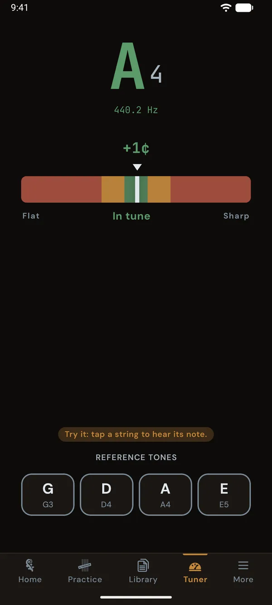
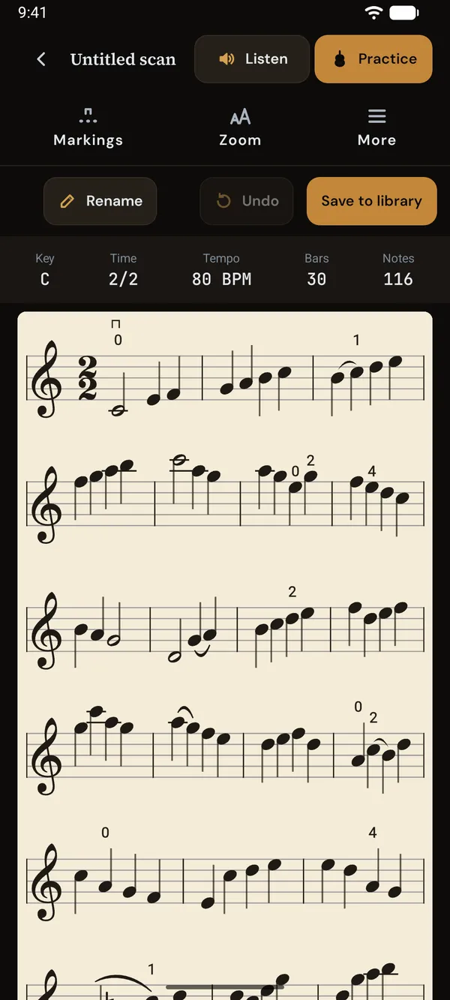
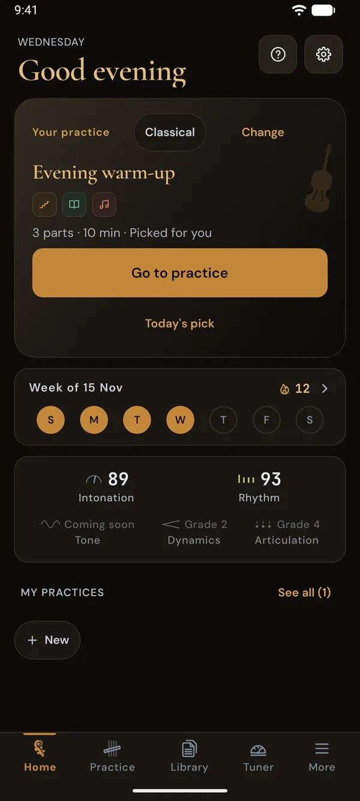

[ Violin practice ][ Classical and Carnatic ]
Every note, marked as you play.
Rosin listens through your phone's microphone and colours each note on the score: green when it was in tune, amber when it was close, red when it was off. When you stop, you see how each bar went.
Android first.
iOS is coming.

[ Who it is for ]
Rosin is for adults who play, or are coming back to the violin, and can already read a little music. It is not a first-lesson course, and it is not a replacement for a teacher.
[ Listening ]
Rosin hears every note you play.
[ How it works ]
-
01
Play
Pick a scale, an etude or a piece and start. Play along and the music moves on the beat, or play freely and Rosin waits for you.

-
02
See each note
Each note turns green when it was in tune, amber when it was close and red when it was off. A small bar under it shows how long you held it against the written length.
A drawing of a practice run, not a recording. -
03
Fix it
When you stop, you see how each bar went. Loop the bars that went red, slow them down, and play them again with a metronome.

Four ways to practise the same music.
- I
Play along
The music moves on the beat and does not wait.
- II
Echo
Rosin plays a bar, then you play it back.
- III
Just me
Play freely and Rosin waits for you.
- IV
Perform
Play straight through. The whole run is graded at the end.
Classical and Carnatic
[ Classical ]
Scales to three octaves, and studies by collection.
- Major, minor and chromatic scales and arpeggios, up to three octaves.
- Three-octave fingerings follow the standard Flesch table, shifts included.
- Studies by Kayser and Wohlfahrt, grouped by collection.
- Photograph your own sheet music and Rosin turns it into a score you can practise.

[ Carnatic ]
A second style, with its own notation.
- Read sargam with the tala bars.
- Set the shruti and play with a tambura drone and the tala clicks.
- Sarali and janta varisais, alankarams, geethams, a swarajati and varnams.
- The tuner has a Carnatic face.

[ Also in the app ]
See the fingerboard
Show the score, the fingerboard, or both.
Each note sits where your fingering plan puts it, with its finger number.

-

Tuner
Shows how far your note is from the pitch, with a reference tone for each open string.
-

Scan your music
Up to three pages a scan, three scans with each install. Bars it is unsure about are marked, and you can correct notes before you play.
-

Practice plans
Rosin picks three or four parts for your grade from what you played recently. Change a part, reorder them, or build your own.
Everything Rosin plays back, from the reference tones to the pieces, uses a violin voice built from recorded samples.
Private by design
- No account is needed.
- The sound from your microphone is analysed on your phone.
- Your practice history stays on your device.
Anonymous usage statistics help us fix problems, and you can turn them off in Settings.
Tonight: play a scale and see which notes were off.
Android first.
iOS is coming.
For the best reading, play in a quiet room with the phone about a metre from the violin.